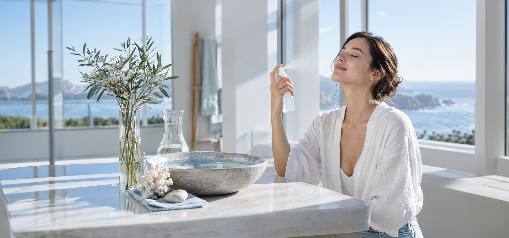
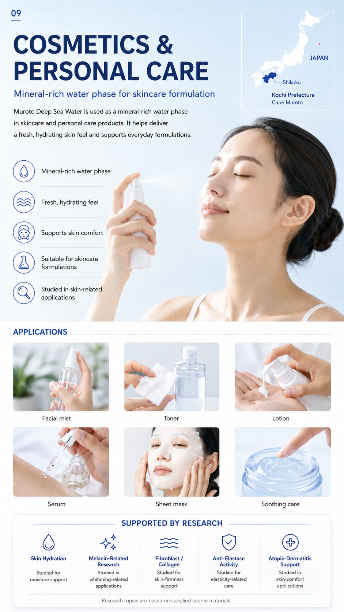
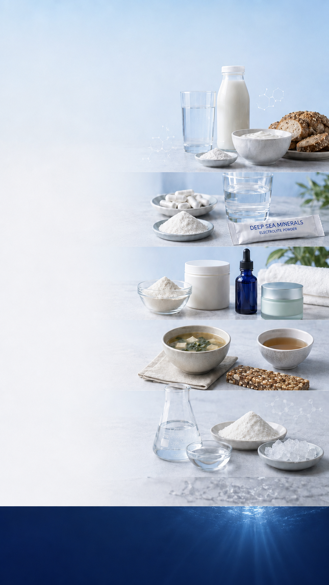
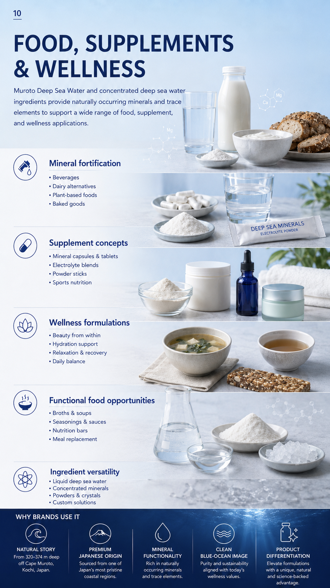

Mineral fortification
- Beverages
- Dairy alternatives
- Plant-based foods
- Baked goods

Mineral-rich water phase for skincare formulation
Muroto Deep Sea Water is used as a mineral-rich water phase in skincare and personal care products. It helps deliver a fresh, hydrating skin feel and supports everyday formulations.

Studied for
moisture support
Studied in whitening-related applications
Studied for
skin-firmness support
Studied for elasticity-related care
Studied in
skin-comfort applications
Research topics are based on supplied source materials.

Muroto Deep Sea Water and concentrated deep sea water ingredients provide naturally occurring minerals and trace elements to support a wide range of food, supplement, and wellness applications.

From 320–374 m deep off Cape Muroto, Kochi, Japan.
Sourced from one of Japan’s most pristine coastal regions.
Rich in naturally occurring minerals and trace elements.
Purity and sustainability aligned with today’s wellness values.
Elevate formulations with a unique, natural and science-backed advantage.